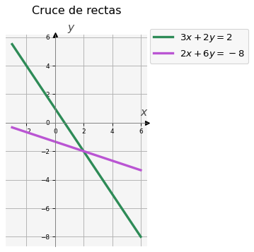
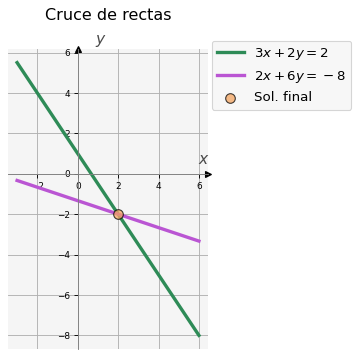
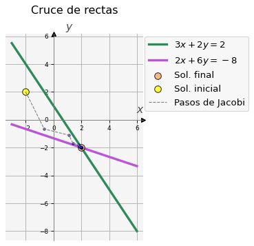
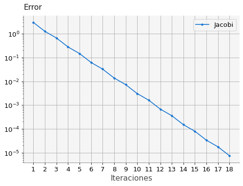
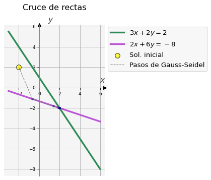
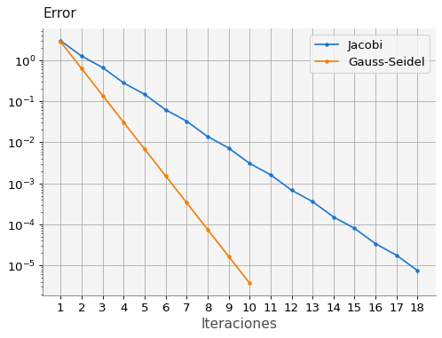
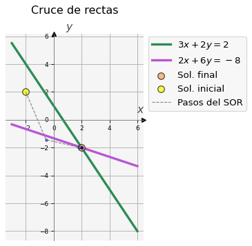
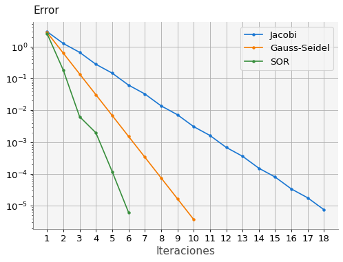

import numpy as np
import ipywidgets as widgets
import macti.visual as mvis2 Métodos iterativos para la solución de sistemas de ecuaciones lineales
Objetivo.
Describir e implementar los algoritmos de Jacobi, Gauss-Seidel y SOR para la solución de sistemas de ecuaciones lineales.
MACTI-Algebra_Lineal_01 by Luis M. de la Cruz is licensed under Attribution-ShareAlike 4.0 International


Trabajo realizado con el apoyo del Programa UNAM-DGAPA-PAPIME PE101922
3 Cruce de dos rectas.
Las siguientes dos rectas se cruzan en algún punto.
\[ \begin{array}{ccc} 3x + 2y & = &2 \\ 2x + 6y & = &-8 \end{array} \]
Las ecuaciones de las rectas se pueden escribir como:
\[ \begin{array}{ccc} \dfrac{3}{2}x + y & = & 1 \\ \dfrac{2}{6}x + y & = & -\dfrac{8}{6} \end{array} \Longrightarrow \begin{array}{ccc} y = m_1 x + b_1 \\ y = m_2 x + b_2 \end{array} \text{ donde } \begin{array}{ccc} m_1 = -\dfrac{3}{2} & b_1 = 1 \\ m_2 = -\dfrac{2}{6} & b_2 = -\dfrac{8}{6} \end{array} \]
Ahora realizaremos la gráfica de las rectas:
3.1 Definición y gráfica de las rectas
3.2 Ejercicio 1.
En la siguiente celda se define el domino \(x\) para las líneas rectas, los parámetros para construir la línea recta 1 y su construcción. De la misma manera define los parámetros y construye la recta 2. Si todo lo hiciste correctamente, la celda de graficación mostrará las gráficas de las líneas rectas.
from macti.evaluation import FileAnswer, Quizz
#file_anser = FileAnswer()
#quizz = Quizz()# Dominio
x = np.linspace(-3,6,10)
# Línea recta 1
m1 = -3/2
b1 = 1
y1 = m1 * x + b1
# Línea recta 2
# m2 = ...
# b2 = ...
# y2 = ...
### BEGIN SOLUTION
m2 = -2/6
b2 = -8/6
y2 = m2 * x + b2
#file_answer('1', m2, 'm2 incorrecta revisa el valor del parámetro.')
#file_answer('2', b2, 'b2 incorrecta revisa el valor del parámetro.')
#file_answer('3', y2, 'y2 no está definida correctamente.')
### END SOLUTION#quizz.eval_numeric('1', m2)
#quizz.eval_numeric('2', b2)
#quizz.eval_numeric('3', y2)Gráfica de las líneas rectas.
v = mvis.Plotter(1,1,[dict(aspect='equal')],title='Cruce de rectas')
v.set_coordsys(1)
v.plot(1, x, y1, lw = 3, c = 'seagreen', label = '$3x+2y=2$') # Línea recta 1
v.plot(1, x, y2, lw = 3, c = 'mediumorchid',label = '$2x+6y=-8$') # Línea recta 2
v.legend(ncol = 1, frameon=True, loc='best', bbox_to_anchor=(1.75, 1.05))
v.grid()
v.show()
3.3 Sistemas lineales.
Las ecuaciones de las rectas se pueden escribir en forma de un sistema lineal:
\[ \left[ \begin{array}{cc} 3 & 2 \\ 2 & 6 \end{array} \right] \left[ \begin{array}{c} x_{0} \\ x_{1} \end{array} \right] = \left[ \begin{array}{c} 2 \\ -8 \end{array} \right] \tag{1} \]
Podemos calcular el cruce de las rectas resolviendo el sistema lineal:
3.4 Ejemplo 1.
Definir el sistema lineal y resolverlo. Posteriomente graficar las rectas y el punto solución.
El sistema lineal se puede resolver directamente con la función np.linalg.solve() como sigue:
A = np.array([[3, 2],[2,6]] )
b = np.array([[2,-8]])
print("Matriz A : \n",A)
print("Vector b : \n", b)
sol = np.linalg.solve(A,b[0]) # Función del módulo linalg para resolver el sistema
print("Solución del sistema: ", sol)Matriz A :
[[3 2]
[2 6]]
Vector b :
[[ 2 -8]]
Solución del sistema: [ 2. -2.]Gráfica de las líneas rectas y el punto de cruce (solución).
v = mvis.Plotter(1,1,[dict(aspect='equal')],title='Cruce de rectas')
v.set_coordsys(1)
v.plot(1, x, y1, lw = 3, c = 'seagreen', label = '$3x+2y=2$') # Línea recta 1
v.plot(1, x, y2, lw = 3, c = 'mediumorchid', label = '$2x+6y=-8$') # Línea recta 2
v.scatter(1, sol[0], sol[1], fc='sandybrown', ec='k', s = 75, alpha=0.75, zorder=5, label='Sol. final') # Solución
v.legend(ncol = 1, frameon=True, loc='best', bbox_to_anchor=(1.75, 1.05))
v.grid()
v.show()
En general, un sistema de ecuaciones lineales de \(n \times n\) se escribe como sigue:
\[ \begin{array}{ccccccc} a_{11}x_1 & + & a_{12}x_2 & + \dots + & a_{1n}x_n & = & b_1 \\ a_{21}x_1 & + & a_{22}x_2 & + \dots + & a_{2n}x_n & = & b_2 \\ \vdots & & \vdots & & \vdots & & \vdots \\ a_{i1}x_1 & + & a_{i2}x_2 & + \dots + & a_{in}x_n & = & b_i \\ \vdots & & \vdots & & \vdots & & \vdots \\ a_{n1}x_1 & + & a_{n2}x_2 & + \dots + & a_{nn}x_n & = & b_n \end{array} \]
Es posible usar diferentes métodos para resolver este tipo de sistemas. Veamos tres de ellos.
4 Método de Jacobi
En este método, de la primera ecuación se despeja \(x_1\); de la segunda ecuación se despeja \(x_2\); y a sí sucesivamente, de tal manera que obtenemos: \[ \begin{eqnarray*} x_1 & = &\left( b_1 - (a_{12}x_2 + \dots + a_{1n}x_n) \right) / a_{11} \\ x_2 & = &\left( b_2 - (a_{21}x_1 + \dots + a_{2n}x_n) \right) / a_{22} \\ \vdots & & \vdots \\ x_i & = &\left( b_i - (a_{i1}x_1 + \dots + a_{in}x_n) \right) / a_{ii} \\ \vdots & & \vdots \\ x_n & = &\left( b_n - (a_{n1}x_1 + \dots + a_{nn-1}x_{n-1}) \right) / a_{nn} \end{eqnarray*} \]
Suponemos ahora que tenemos una solución inicial aproximada \(\mathbf{x}^0 = [x_1^0, \dots, x_n^0]\). Usando esta solución inicial, es posible hacer una nueva aproximación para obtener \(\mathbf{x}^1 = [x_1^1, \dots, x_n^1]\) como sigue:
\[ \begin{eqnarray*} x_1^1 & = &\left( b_1 - (a_{12}x_2^0 + \dots + a_{1n}x_n^0) \right) / a_{11} \\ x_2^1 & = &\left( b_2 - (a_{21}x_1^0 + \dots + a_{2n}x_n^0) \right) / a_{22} \\ \vdots & & \vdots \\ x_i^1 & = &\left( b_i - (a_{i1}x_1^0 + \dots + a_{in}x_n^0) \right) / a_{ii} \\ \vdots & & \vdots \\ x_n^1 & = &\left( b_n - (a_{n1}x_1^0 + \dots + a_{nn-1}x_{n-1}^0) \right) / a_{nn} \end{eqnarray*} \]
- En general para \(i = 1, \dots, n\) y \(k = 1, 2, \dots\) tenemos:
\[ x_i^k = \frac{1}{a_{i,i}} \left(b_i - \sum_{j \neq i} a_{i,j} x_j^{k-1} \right) \]
- En términos de matrices, la iteración de Jacobi se escribe: \[ \mathbf{x}^k = -\mathbf{D}^{-1} \mathbf{B}\mathbf{x}^{k-1} + \mathbf{D}^{-1} \mathbf{b} \]
donde \(\mathbf{D}\) es la matriz diagonal y \(\mathbf{B} = \mathbf{A} - \mathbf{D}\).
- El cálculo de cada componente \(x_i^k\) es independiente de las otras componentes, por lo que este método se conoce también como de desplazamientos simultáneos.
4.1 Algoritmo Jacobi.
En general, podemos definir el siguiente algoritmo para el método de Jacobi.
Observa que en este algoritmo hay un ciclo while el cual termina cuando el error es menor o igual que una tolerancia tol o se ha alcanzado un número máximo de iteraciones kmax. En la línea 11 se calcula el error, que en términos matemáticos se define como \(error = || \mathbf{x}^k - \mathbf{x}||\) donde \(\mathbf{x}^k\) es la aproximación de la iteración \(k\)-ésima y \(\mathbf{x}\) es la solución exacta. En muchas ocasiones no se tiene acceso a la solución exacta por lo que se compara con la solución de la iteración anterior, es decir \(error = || \mathbf{x}^k - \mathbf{x}^{k-1}||\). En los ejemplos que siguen si tenemos la solución exacta, por lo que haremos la comparación con ella.
4.2 Implementación.
def jacobi(A,b,tol,kmax,xi, yi):
N = len(b[0])
xnew = np.zeros(N)
xold = np.zeros(N)
x = np.array([2, -2]) # Solución exacta
# Solución inicial
xold[0] = xi
xold[1] = yi
xs = [xi]
ys = [yi]
e = 10
error = []
k = 0
print('{:^2} {:^10} {:^12} {:^12}'.format(' i ', 'Error', 'x0', 'x1'))
while(e > tol and k < kmax) :
for i in range(0,N): # se puede hacer en paralelo
xnew[i] = 0
for j in range(0,i):
xnew[i] += A[i,j] * xold[j]
for j in range(i+1,N):
xnew[i] += A[i,j] * xold[j]
xnew[i] = (b[0,i] - xnew[i]) / A[i,i]
# Almacenamos la solución actual
xs.append(xnew[0])
ys.append(xnew[1])
e = np.linalg.norm(xnew-x, 2) # Cálculo del error
error.append(e)
k += 1
xold[:] = xnew[:]
print('{:2d} {:10.9f} ({:10.9f}, {:10.9f})'.format(k, e, xnew[0], xnew[1]))
return xnew, np.array(xs), np.array(ys), error, k4.3 Ejemplo 3. Aplicación del método de Jacobi.
Haciendo uso de la función jacobi definida en la celda anterior, aproxima la solución del sistema de ecuaciones (1). Utiliza la solución inicial (xi, yi) = \((-2, 2)\), una tolerancia tol = \(1 \times 10^{-5}\) y kmax = \(50\) iteraciones.
# Solución inicial
(xi, yi) = (-2, 2)
tol = 1e-5
kmax = 50
# Ejecución del método de Jacobi
solJ, xs, ys, eJ, itJ = jacobi(A, b, tol, kmax, xi, yi) i Error x0 x1
1 2.981423970 (-0.666666667, -0.666666667)
2 1.257078722 (1.111111111, -1.111111111)
3 0.662538660 (1.407407407, -1.703703704)
4 0.279350827 (1.802469136, -1.802469136)
5 0.147230813 (1.868312757, -1.934156379)
6 0.062077962 (1.956104252, -1.956104252)
7 0.032717959 (1.970736168, -1.985368084)
8 0.013795103 (1.990245389, -1.990245389)
9 0.007270657 (1.993496926, -1.996748463)
10 0.003065578 (1.997832309, -1.997832309)
11 0.001615702 (1.998554873, -1.999277436)
12 0.000681240 (1.999518291, -1.999518291)
13 0.000359045 (1.999678861, -1.999839430)
14 0.000151387 (1.999892954, -1.999892954)
15 0.000079788 (1.999928636, -1.999964318)
16 0.000033641 (1.999976212, -1.999976212)
17 0.000017731 (1.999984141, -1.999992071)
18 0.000007476 (1.999994714, -1.999994714)Observa que la función jacobi() regresa 5 valores: * solJ la solución obtenida, * xs y ys componentes de las soluciones aproximadas en cada paso, * eJ el error con respecto a la solución exacta e * itJ el número de iteraciones realizadas.
A continuación graficamos como es que la solución se va aproximando con este método.
v = mvis.Plotter(1,1,[dict(aspect='equal')],title='Cruce de rectas')
v.set_coordsys(1)
v.plot(1, x, y1, lw = 3, c = 'seagreen', label = '$3x+2y=2$') # Línea recta 1
v.plot(1, x, y2, lw = 3, c = 'mediumorchid', label = '$2x+6y=-8$') # Línea recta 2
v.scatter(1, sol[0], sol[1], fc='sandybrown', ec='k', s = 75, alpha=0.75, zorder=5, label='Sol. final') # Solución
# Graficamos los pasos
v.scatter(1, xs[0], ys[0], fc='yellow', ec='k', s = 75, alpha=0.75, zorder=8, label='Sol. inicial')
v.scatter(1, xs[1:], ys[1:], c='navy', s = 10, alpha=0.5, zorder=8)
v.plot(1, xs, ys, c='grey', ls = '--', lw=1.0, zorder=8, label='Pasos de Jacobi')
v.legend(ncol = 1, frameon=True, loc='best', bbox_to_anchor=(1.80, 1.01))
v.grid()
v.show()
4.4 Cálculo del error
Definimos \(e_i^k = x_i^k - x_i\) como la diferencia entre la \(i\)-ésima componente de la solución exacta y la \(i\)-ésima componente de la \(k\)-ésima iteración, de tal manera que \(\mathbf{e} = [e_1, \dots, e_n]^T\) es el vector error.
Aplicando una vez la iteración de Jacobi para \(x_i\) y \(x_i^{k+1}\) podemos escribir la diferencia como sigue:
\[ \begin{eqnarray*} \left| e_i^{k+1} \right| & = &\left| x_i^{k+1} - x_i \right| \\ \left| e_i^{k+1} \right| & = & \left| \frac{1}{a_{i,i}} \left(b_i - \sum_{j \neq i} a_{i,j} x_j^{k} \right) - \frac{1}{a_{i,i}} \left(b_i - \sum_{j \neq i} a_{i,j} x_j \right) \right| \\ \left| e_i^{k+1} \right| & = & \left| -\sum_{j \neq i} \frac{a_{i,j}}{a_{i,i}} (x_j^k - x_j)\right| \\ \left| e_i^{k+1} \right| & = & \left| -\sum_{j \neq i} \frac{a_{i,j}}{a_{i,i}} e_j^k \right| \le \sum_{j \neq i} \left| \frac{a_{i,j}}{a_{i,i}} \right| || \mathbf{e}^k ||_\infty, \qquad \forall i, k . \end{eqnarray*} \]
En particular: \[ \max_{1 \le i \le n} \left( \left| e_i^{k+1} \right| \right) = || \mathbf{e}^{k+1} ||_\infty \le \sum_{j \neq i} \left| \frac{a_{i,j}}{a_{i,i}} \right| || \mathbf{e}^k ||_\infty \]
Definimos \(\displaystyle K = \max_{1 \le i \le n} \sum_{j \neq i} \left| \frac{a_{i,j}}{a_{i,i}} \right|\) entonces:
\[ \begin{eqnarray*} || \mathbf{e}^{k+1} ||_\infty & \le & K || \mathbf{e}^{k} ||_\infty \le K \left( K || \mathbf{e}^{k-1} ||_\infty \right) \le \dots \le K^k || \mathbf{e}^{1} ||_\infty \\ || \mathbf{e}^{k+1} ||_\infty & \le & K^k || \mathbf{e}^{1} ||_\infty \end{eqnarray*} \]
Si \(K < 1\) entonces \(\mathbf{e}^{k} \rightarrow 0\) cuando \(k \rightarrow \infty\)
La condición \(K < 1\) implica: \[ \sum_{j \neq i} |a_{i,j}| < |a_{i,i}|, \forall i \]
A continuación graficamos el error que se va obteniendo en cada paso del método:
# Lista con el número de las iteraciones
l_itJ = list(range(1,itJ+1))
# Parámetros para los ejes
a_p = dict(yscale='log', xlabel='Iteraciones', xticks = l_itJ)
# Gráfica del error
v = mvis.Plotter(1,1,[a_p])
v.axes(1).set_title('Error', loc='left')
v.plot(1, l_itJ, eJ, marker='.', label='Jacobi') # Error eJ
v.legend()
v.grid()
5 Método de Gauss-Seidel
La principal diferencia con el método de Jacobi es que las ecuaciones se analizan en un orden determinado.
Por ejemplo, si realizamos el cálculo en orden ascendente y ya hemos evaluado \(x_1\) y \(x_2\), para evaluar \(x_3\) haríamos lo siguiente:} \[ \begin{eqnarray*} \underline{x_1^1} & = &\left( b_1 - (a_{12}x_2^0 + a_{13} x_3^0 + \dots + a_{1n}x_n^0) \right) / a_{11} \\ \underline{x_2^1} & = &\left( b_2 - (a_{21}\underline{x_1^1} + a_{23}x_3^0 + \dots + a_{2n}x_n^0) \right) / a_{22} \\ x_3 & = &\left( b_3 - (a_{31}\underline{x_1^1} + a_{32}\underline{x_2^1} + \dots + a_{3n}x_n^0)\right) / a_{22} \end{eqnarray*} \]
En general la fórmula del método es como sigue: $$ x_i^k = (b_i - {j < i} a{i,j}
{j > i} a{i,j} x_j^{k-1} ) $$
Este algoritmo es serial dado que cada componente depende de que las componentes previas se hayan calculado (desplazamientos sucesivos).
El valor de la nueva iteración \(\mathbf{x}^k\) depende del orden en que se examinan las componentes. Si se cambia el orden, el valor de \(\mathbf{x}^k\) cambia.
5.1 Algoritmo Gauss-Seidel.
En general, podemos definir el siguiente algoritmo para el método de Gauss-Seidel.

Se aplican los mismo comentarios que para el algoritmo de Jacobi.
5.2 Implementación.
def gauss_seidel(A,b,tol,kmax,xi,yi):
N = len(b[0])
xnew = np.zeros(N)
xold = np.zeros(N)
x = np.array([2, -2]) # Solución exacta
# Solución inicial
xold[0] = xi
xold[1] = yi
xs = [xi]
ys = [yi]
e = 10
error = []
k = 0
print('{:^2} {:^10} {:^12} {:^12}'.format(' i ', 'Error', 'x0', 'x1'))
while(e > tol and k < kmax) :
for i in range(0,N): # se puede hacer en paralelo
xnew[i] = 0
for j in range(0,i):
xnew[i] += A[i,j] * xnew[j]
for j in range(i+1,N):
xnew[i] += A[i,j] * xold[j]
xnew[i] = (b[0,i] - xnew[i]) / A[i,i]
# Almacenamos la solución actual
xs.append(xnew[0])
ys.append(xnew[1])
e = np.linalg.norm(xnew-x,2) # Cálculo del error
error.append(e)
k += 1
xold[:] = xnew[:]
print('{:2d} {:10.9f} ({:10.9f}, {:10.9f})'.format(k, e, xnew[0], xnew[1]))
return xnew, np.array(xs), np.array(ys), error, k5.3 Ejercicio 2.
Haciendo uso de la función gauss_seidel() definida en la celda anterior, aproxima la solución del sistema de ecuaciones del Ejemplo 1. Utiliza la solución inicial (xi, yi) = \((-2, 2)\), una tolerancia tol = \(1 \times 10^{-5}\) y kmax = \(50\) iteraciones. Utiliza las variables solG, xs, ys, eG e itG para almacenar la salida de la función gauss_seidel(). Posteriormente grafica las rectas y cómo se va calculando la solución con este método (puedes usar el mismo código que en el caso de Jacobi). Grafica también los errores para el método de Jacobi y para el de Gauss-Seidel, deberías obtener una imagen como la siguiente:

Cálculo de la solución con Gauss-Seidel
# Solución inicial
# xi, yi =
# tol =
# kmax =
# Método de Gauss-Seidel
# ...
### BEGIN SOLUTION
# Solución inicial
xi, yi = -2, 2
tol = 1e-5
kmax = 50
# Método de Gauss-Seidel
solG, xs, ys, eG, itG = gauss_seidel(A, b, tol, kmax, xi, yi)
#file_answer.write('4', solG, 'solG es incorrecta: revisa la llamada y ejecución de la función gauss_seidel() así como sus parámetros de entrada.')
#file_answer.write('5', eG[-1], 'eG[-1] es incorrecto: revisa la llamada y ejecución de la función gauss_seidel() así como sus parámetros de entrada.')
#file_answer.write('6', itG, 'itG es incorrector: revisa la llamada y ejecución de la función gauss_seidel() así como sus parámetros de entrada.')
### END SOLUTION i Error x0 x1
1 2.810913476 (-0.666666667, -1.111111111)
2 0.624647439 (1.407407407, -1.802469136)
3 0.138810542 (1.868312757, -1.956104252)
4 0.030846787 (1.970736168, -1.990245389)
5 0.006854842 (1.993496926, -1.997832309)
6 0.001523298 (1.998554873, -1.999518291)
7 0.000338511 (1.999678861, -1.999892954)
8 0.000075225 (1.999928636, -1.999976212)
9 0.000016717 (1.999984141, -1.999994714)
10 0.000003715 (1.999996476, -1.999998825)#quizz.eval_numeric('4', solG)
#quizz.eval_numeric('5', eG[-1])
#quizz.eval_numeric('6', itG)Gráfica de las rectas, la solución y los pasos realizados
# Puedes usar el mismo código que en el caso anterior.
### BEGIN SOLUTION
v = mvis.Plotter(1,1,[dict(aspect='equal')],title='Cruce de rectas')
v.set_coordsys(1)
v.plot(1, x, y1, lw = 3, c = 'seagreen', label = '$3x+2y=2$') # Línea recta 1
v.plot(1, x, y2, lw = 3, c = 'mediumorchid', label = '$2x+6y=-8$') # Línea recta 2
# Graficamos los pasos
v.scatter(1, xs[0], ys[0], fc='yellow', ec='k', s = 75, alpha=0.75, zorder=8, label='Sol. inicial')
v.scatter(1, xs[1:], ys[1:], c='navy', s = 10, alpha=0.5, zorder=8)
v.plot(1, xs, ys, c='grey', ls = '--', lw=1.0, zorder=8, label='Pasos de Gauss-Seidel')
v.legend(ncol = 1, frameon=True, loc='best', bbox_to_anchor=(2.05, 1.01))
v.grid()
v.show()
### END SOLUTION
Graficación de los errores de Jacobi y Gauss-Seidel
# Utiliza el código del caso anterior adaptado para que pueda graficar ambos errores.
### BEGIN SOLUTION
# Lista con el número de las iteraciones máxima
it_max = max(itJ, itG)+1
l_it_max = list(range(1,it_max))
# Listas con el número de las iteraciones para cada algoritmo
l_itJ = list(range(1,itJ+1))
l_itG = list(range(1,itG+1))
# Parámetros para los ejes
a_p = dict(yscale='log', xlabel='Iteraciones', xticks = l_it_max)
# Gráficas del error
v = mvis.Plotter(1,1,[a_p])
v.axes(1).set_title('Error', loc='left')
v.plot(1, l_itJ, eJ, marker='.', label='Jacobi')
v.plot(1, l_itG, eG, marker='.', label='Gauss-Seidel')
v.legend()
v.grid()
### END SOLUTION
6 Método de Sobrerrelajación sucesiva (Successive Overrelaxation, SOR)
Se obtiene apicando una extrapolación a la iteración de Gauss-Seidel.
Esta extrapolación es un promedio pesado entre la iteración actual y la anterior: \[ x_i^k = \omega \bar{x}_i^k + (1-\omega)x_i^{k-1} \] donde \(\bar{x}\) denota una iteración de Gauss-Seidel y \(\omega\) es el factor de extrapolación.
En términos de matrices tenemos: $$ ^k = ( - )^{-1}( + (1 - ))^{k-1}
( - )^{-1} $$
Elegir la \(\omega\) óptima no es simple, aunque se sabe que si \(\omega\) está fuera del intervalo \((0,2)\) el método falla.
6.1 Implementación 3.
def sor(A,b,tol,kmax,w,xi,yi):
N = len(b[0])
xnew = np.zeros(N)
xold = np.zeros(N)
x = np.array([2, -2]) # Solución exacta
# Solución inicial
xold[0] = xi
xold[1] = yi
xs = [xi]
ys = [yi]
e = 10
error = []
k = 0
while(e > tol and k < kmax) :
for i in range(0,N): # se puede hacer en paralelo
sigma = 0
for j in range(0,i):
sigma += A[i,j] * xnew[j]
for j in range(i+1,N):
sigma += A[i,j] * xold[j]
sigma = (b[0,i] - sigma) / A[i,i]
xnew[i] = xold[i] + w * (sigma -xold[i])
# Almacenamos la solución actual
xs.append(xnew[0])
ys.append(xnew[1])
e = np.linalg.norm(xnew-x, 2) # Cálculo del error
error.append(e)
k += 1
xold[:] = xnew[:]
print('{:2d} {:10.9f} ({:10.9f}, {:10.9f})'.format(k, e, xnew[0], xnew[1]))
return xnew, np.array(xs), np.array(ys), error, k6.2 Ejercicio 3.
Haciendo uso de la función sor() definida en la celda anterior, aproxima la solución del sistema de ecuaciones del Ejercicio 1. Utiliza la solución inicial (xi, yi) = \((-2, 2)\), una tolerancia tol = \(1 \times 10^{-5}\) y kmax = \(50\) iteraciones. Elije el valor de \(\omega = 1.09\). Utiliza las variables solSOR, xs, ys, eSOR e itSOR para almacenar la salida de la función gauss_seidel(). Posteriormente grafica las rectas y cómo se va calculando la solución con este método (puedes usar el mismo código que en el caso de Jacobi). Grafica también los errores para los tres métodos (Jacobi, Gauss-Seidel y SOR).

Cálculo de la solución con SOR
# Solución inicial
# xi, yi =
# tol =
# kmax =
# Método de SOR, probar con w = 1.09, 1.8, 1.99, 2.0
# w = ...
# ...
### BEGIN SOLUTION
# Solución inicial
xi, yi = -2, 2
tol = 1e-5
kmax = 50
# Método de SOR, probar con w = 1.09, 1.8, 1.99, 2.0
w = 1.09
solSOR, xs, ys, eSOR, itSOR = sor(A, b, tol, kmax, w, xi, yi)
#file_answer.write('7', solSOR, 'solSOR es incorrecta: revisa la llamada y ejecución de la función sor() así como sus parámetros de entrada.')
#file_answer.write('8', eSOR[-1], 'eSOR[-1] es incorrecto: revisa la llamada y ejecución de la función sor() así como sus parámetros de entrada.')
#file_answer.write('9', itSOR, 'itSOR es incorrector: revisa la llamada y ejecución de la función sor() así como sus parámetros de entrada.')
### END SOLUTION 1 2.608651498 (-0.546666667, -1.434711111)
2 0.182203110 (1.818423407, -1.984903171)
3 0.006309667 (2.005371531, -2.003310371)
4 0.001963366 (2.001922098, -2.000400429)
5 0.000118187 (2.000117990, -2.000006831)
6 0.000006254 (1.999994345, -1.999997330)#quizz.eval_numeric('7', solSOR)
#quizz.eval_numeric('8', eSOR[-1])
#quizz.eval_numeric('9', itSOR)Gráfica de las rectas, la solución y los pasos realizados
# Puedes usar el mismo código que en el caso anterior.
### BEGIN SOLUTION
v = mvis.Plotter(1,1,[dict(aspect='equal')],title='Cruce de rectas')
v.set_coordsys(1)
v.plot(1, x, y1, lw = 3, c = 'seagreen', label = '$3x+2y=2$') # Línea recta 1
v.plot(1, x, y2, lw = 3, c = 'mediumorchid', label = '$2x+6y=-8$') # Línea recta 2
v.scatter(1, sol[0], sol[1], fc='sandybrown', ec='k', s = 75, alpha=0.75, zorder=5, label='Sol. final') # Solución
# Graficamos los pasos
v.scatter(1, xs[0], ys[0], fc='yellow', ec='k', s = 75, alpha=0.75, zorder=8, label='Sol. inicial')
v.scatter(1, xs[1:], ys[1:], c='navy', s = 10, alpha=0.5, zorder=8)
v.plot(1, xs, ys, c='grey', ls = '--', lw=1.0, zorder=8, label='Pasos del SOR')
v.legend(ncol = 1, frameon=True, loc='best', bbox_to_anchor=(1.78, 1.01))
v.grid()
v.show()
### END SOLUTION
# Utiliza el código del caso anterior adaptado para que pueda graficar los tres errores.
### BEGIN SOLUTION
# Lista con el número de las iteraciones máxima
it_max = max(itJ, itG, itSOR)+1
l_it_max = list(range(1,it_max))
# Listas con el número de las iteraciones para cada algoritmo
l_itJ = list(range(1,itJ+1))
l_itG = list(range(1,itG+1))
l_itSOR = list(range(1,itSOR+1))
# Parámetros para los ejes
a_p = dict(yscale='log', xlabel='Iteraciones', xticks = l_it_max)
# Gráficas del error
v = mvis.Plotter(1,1,[a_p])
v.axes(1).set_title('Error', loc='left')
v.plot(1, l_itJ, eJ, marker='.', label='Jacobi')
v.plot(1, l_itG, eG, marker='.', label='Gauss-Seidel')
v.plot(1, l_itSOR, eSOR, marker='.', label='SOR')
v.legend()
v.grid()
### END SOLUTION
6.3 Ejercicio 4.
Almacena los errores de los tres métodos en los archivos: errorJacobi.npy, errorGaussSeidel.npy y errorSOR.npy usando la función np.save(), checa la documentación aquí.
Prueba que tu código funciona usando:
print('Error Jacobi = \n{}\n'.format(np.load('errorJacobi.npy')))
print('Error Gauss-Seidel = \n{}\n'.format(np.load('errorGaussSeidel.npy')))
print('Error SOR = \n{}\n'.format(np.load('errorSOR.npy')))
La salida debería ser:
Error Jacobi =
[2.98142397e+00 1.25707872e+00 ...]
Error Gauss-Seidel =
[2.81091348e+00 6.24647439e-01 ...]
Error SOR =
[2.60865150e+00 1.82203110e-01 ...]# np.save( ... )
#
### BEGIN SOLUTION
np.save('errorJacobi.npy',eJ)
np.save('errorGaussSeidel.npy', eG)
np.save('errorSOR.npy', eSOR)
### END SOLUTIONprint('Error Jacobi = \n{}\n'.format(np.load('errorJacobi.npy')))
print('Error Gauss-Seidel = \n{}\n'.format(np.load('errorGaussSeidel.npy')))
print('Error SOR = \n{}\n'.format(np.load('errorSOR.npy')))Error Jacobi =
[2.98142397e+00 1.25707872e+00 6.62538660e-01 2.79350827e-01
1.47230813e-01 6.20779616e-02 3.27179585e-02 1.37951026e-02
7.27065745e-03 3.06557835e-03 1.61570166e-03 6.81239633e-04
3.59044812e-04 1.51386585e-04 7.97877361e-05 3.36414634e-05
1.77306080e-05 7.47588075e-06]
Error Gauss-Seidel =
[2.81091348e+00 6.24647439e-01 1.38810542e-01 3.08467871e-02
6.85484158e-03 1.52329813e-03 3.38510695e-04 7.52245990e-05
1.67165775e-05 3.71479501e-06]
Error SOR =
[2.60865150e+00 1.82203110e-01 6.30966741e-03 1.96336589e-03
1.18187146e-04 6.25365681e-06]